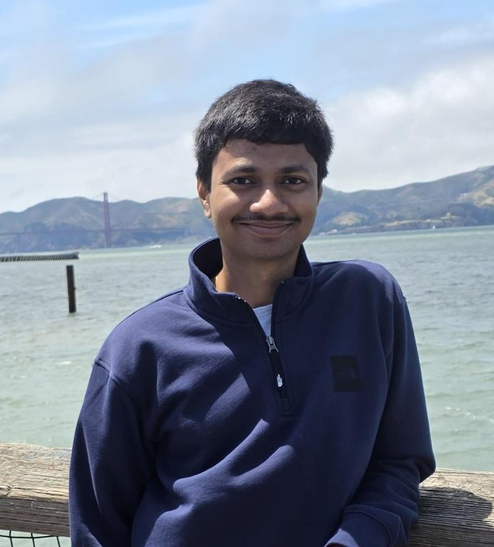

MS Computer Science & Engineering @ Penn State
Systems & Machine Learning

I am a Master’s student in Computer Science and Engineering at The Pennsylvania State University. My research interests lie in Systems and Machine Learning.
I am currently a Software Development Engineer Intern at Amazon Web Services on the Redshift Control Plane team, working on large-scale distributed infrastructure.
I previously worked as a Software Engineering Intern at Platform3 Solutions, where I developed an internal tool for handling documents and querying them using RAG and LLMs, and as a Data Science Intern at Captain Fresh, where I analyzed geospatial aquaculture data to improve shrimp yield prediction and decision-making in the seafood supply chain.
Earlier, I was a research intern at the International Institute of Information Technology, Hyderabad, in the DSAC Lab under the guidance of Prof. P. Krishna Reddy, focusing on information retrieval and word embedding evaluation.
I began my research journey as a research assistant under Prof. K. Anuradha, working on Computer Vision with a special emphasis on medical image analysis. These experiences have fueled my fascination with Machine Learning and its real-world applications.
I am deeply motivated by the need for efficient solutions in medicine, agriculture, and sustainable development. My goal is to develop scalable AI/ML-based systems that address critical societal challenges while advancing my academic and research pursuits.